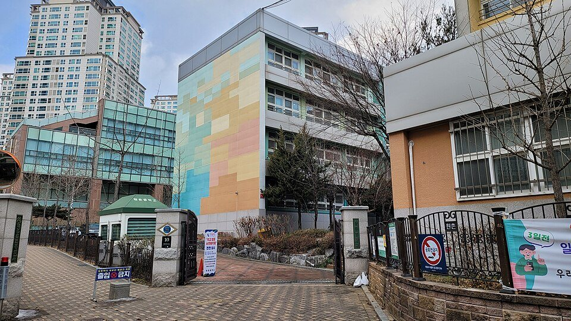

서초구는 관리 중인 중·고등학교만 27곳입니다. 세화고등학교·반포고등학교·상문고등학교·서울고등학교 같은 고등학교와 반포중학교·원촌중학교·서운중학교·방배중학교가 구 안에 흩어져 있습니다. 반포·잠원 쪽과 방배·양재 쪽은 같은 구라도 오가는 데 시간이 들어서, 저녁이 이동으로 묶이는 학생은 집으로 오는 1:1 고등 국어과외나 중등 영어과외를 따로 찾게 됩니다.
오늘은 서초구로 직접 찾아가는 선생님들 가운데 과목과 방문 동네가 다른 두 분을 소개합니다. 한 분은 중1부터 고3까지 여러 과목을 맡되 국어를 중심으로 보는 선생님, 한 분은 초6부터 고2까지 영어만 맡는 선생님입니다.
서초구에서 고등 국어과외 상담이 들어오는 이유는 대개 점수보다 방식입니다. 수업은 열심히 들었는데 시험에서 그 내용이 안 나오는 상태입니다. 이 선생님은 설명을 길게 이어 가지 않고 중간중간 질문으로 되묻는 방식으로 진행합니다. 학생이 이해한 것인지 외운 것인지를 그 자리에서 가릅니다.
문제를 많이 푸는 수업이 아니라 왜 그 답이 되는지를 말로 설명하게 하는 수업에 가깝습니다. 복습 노트를 어떻게 쓰는지도 같이 잡아 줍니다. 국어·영어·수학·사회를 중1부터 고3까지 지도하고 있어 한 과목으로 시작해 범위를 넓히기도 편합니다. 방문 동네는 서초동·방배동·반포동 쪽과 강남구 역삼동·신사동이고 화상 수업도 가능합니다.
윤ㅇ윤 선생님 상세 프로필 →서초구에서 중등 영어과외를 찾는 시점은 보통 단어는 외우는데 문장이 안 읽힐 때입니다. 이 선생님은 읽기·듣기·쓰기를 따로 떼지 않고 한 수업 안에서 연결해 지도합니다. 내신을 준비하면서도 문장을 소리 내어 다루기 때문에, 시험이 끝나면 남는 게 없다는 느낌이 덜합니다.
지도 범위는 초등 6학년부터 고2까지입니다. 오전 시간대 수업도 가능하다고 안내되어 있어, 등교 시간이 자유로운 학생이나 검정고시를 준비하는 학생에게는 선택지가 됩니다. 방문 동네는 서초구 양재동과 강남구 도곡동·논현동·개포동·수서동이고 화상 수업도 가능합니다.
김ㅇㅇ나 선생님 상세 프로필 →학교마다 진도와 시험 범위가 달라서, 학교별로 준비법을 따로 정리해 두었습니다.
👉 서초구 국어과외 선생님 · 서초구 영어과외 선생님 · 서초구 관리 학교 전체 보기